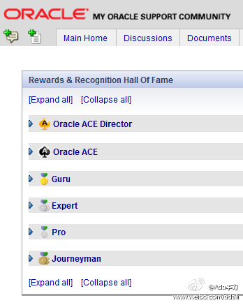

我弟弟上小学时候被妈妈打过屁股, 第二天他找来一张报纸给我妈妈看, 上面有文章:"家长教育不能靠体罚". 现在的零零后直接自己说了, 不用报纸代言.@晓丽Sherlly:新学期开始了，姥爷对典典提出了要求，并威胁说：“以后不用扣钱的方式了，直接打屁股”。典典抗议：“你这种教育方式是不对的，现在不让用了”。
回复@吾是凯:后来的kenai 就是现在java.net网站的平台。不少项目在迁移中丢失了。 //@吾是凯:原来sun的java.net社区多给力啊，各种开源项目和blog，各种java技术技术大拿，各种火花，还有后来的kainee，给力到能和netbens整合，一起写代码的社区，真心为开发人员啊。可现在。。。@Ada李力:晚上和@开源中国 站长红薯聚了聚, 才知道他一直给IBM的DeveloperWorks投稿, 有十年了. 技术文章写得靠谱,而且能量产的人真的不多. 红薯说DW最近有些混乱, 文章质量在下降, 很多产品介绍, 而且稿费也拖很长时间. 即时这样, DW在开发者社区上也值得O记学.
能知道这个的估计都是大学老师，或者研究生学历的。我在学校学过Ada语言，而Ada语言也是为了纪念自世界上第一个女程序员，Ada Augusta Bayron，诗人拜伦的女儿。国内不少做IT的女生取英文名叫Ada, 多少都带点这个因素。[呵呵] //@瞿更生:Ada二十年前了解的一个语言。美国军方使用。---:该账号行为异常，存在安全风险，用户验证之前暂时不能查看。查看帮助 网页链接
才知道Jack的中文名. [呵呵] @JackHan2008@ACOUG中国:#OTN CHINA TOUR专家介绍#韩锷春(Jack Han)，甲骨文大中华区开发者计划高级经理。熟悉Java EE及SOA开发、熟悉Oracle数据库开发工具及技术。曾任某软件公司研发总监。1999年毕业于华南理工大学，获机械设计专业计算机图形学方向硕士学位。 @云和恩墨 @ITPUB官方微博
上个季度，干了很多事，针对不同群体的活动，网上论坛，专区，文档翻译，newsletter等等，其中新浪微博，腾讯微博是捎带做的,也带有尝试性质。但到新季度回顾时，亚太区的那些人只知道我们做了微博(microblog)。微博在我们做过的事情中，只占1%比重. 沟通不通畅，不对等情况下，1%就是100%.
Oracle Support Community (support.oracle.com) 给成员荣誉是有等级的, 以下从低到高: Journeyman -> Professional -> Expert -> Guru -> Oracle ACE -> Oracle ACE Director. 
Java社区只有一个最高荣誉: Java Champion@Ada李力:Oracle Support Community (support.oracle.com) 给成员荣誉是有等级的, 以下从低到高: Journeyman -> Professional -> Expert -> Guru -> Oracle ACE -> Oracle ACE Director.
我们给广州三天培训的参加者发了签到表, 提示我们准备建立"甲骨文技术俱乐部", 愿意参加的就留下QQ号码或者微博号码, 46个人留了QQ号, 6个人留了微博号, 还都是同时带QQ号的. 已经是80后的天下了, 我out了.
我自称草根, #珠三角技术沙龙#的组织者 @laiyonghao @jeff_kit @老甘 说他们才是草根, 好玩的是第二天见到@开源中国 的红薯, 他认为#珠三角技术沙龙#比较高端, 讨论的都是很新很时髦的东西, #开源中国#才是草根. 草根称号也有人抢, 逼得我去查查了百度百科. 网页链接
上学的时候, 有个流行歌<小草>, 歌词是这样的:"没有花香, 没有树高, 我是一棵无人知道的小草, 从不寂寞, 从不烦恼, 你看我的伙伴遍及天涯海角......", 当时意气风发的同学一起议论:"怎么能甘当小草呢? 至少也得长成树!".
界定年代最好的方式就是看对方熟悉什么流行歌了. //@塞纳河水: 70后。@Ada李力:上学的时候, 有个流行歌<小草>, 歌词是这样的:"没有花香, 没有树高, 我是一棵无人知道的小草, 从不寂寞, 从不烦恼, 你看我的伙伴遍及天涯海角......", 当时意气风发的同学一起议论:"怎么能甘当小草呢? 至少也得长成树!".
 现在的零零后直接自己说了, 不用报纸代言.
现在的零零后直接自己说了, 不用报纸代言.